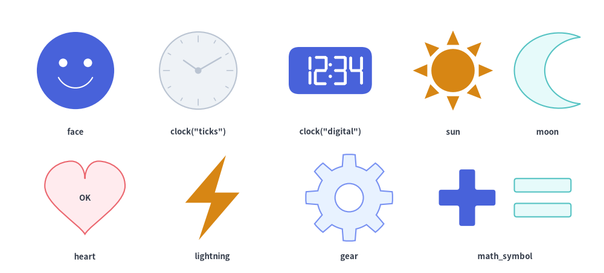
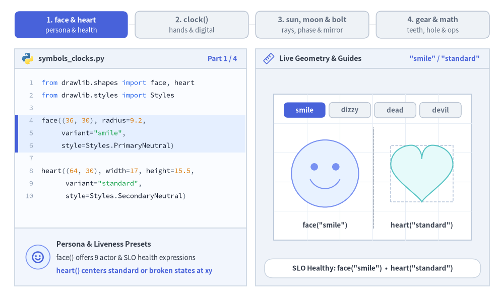
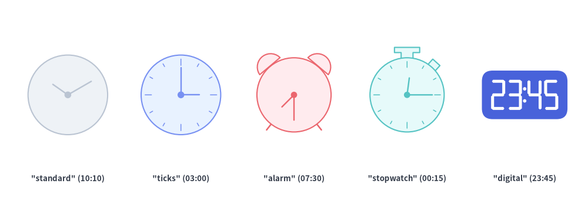
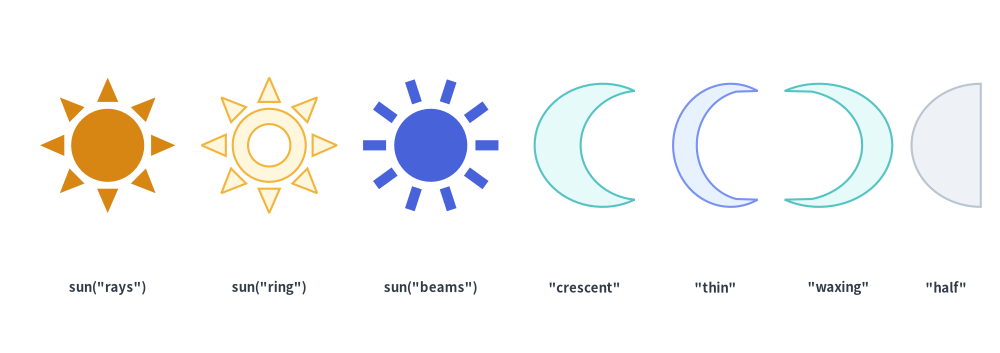
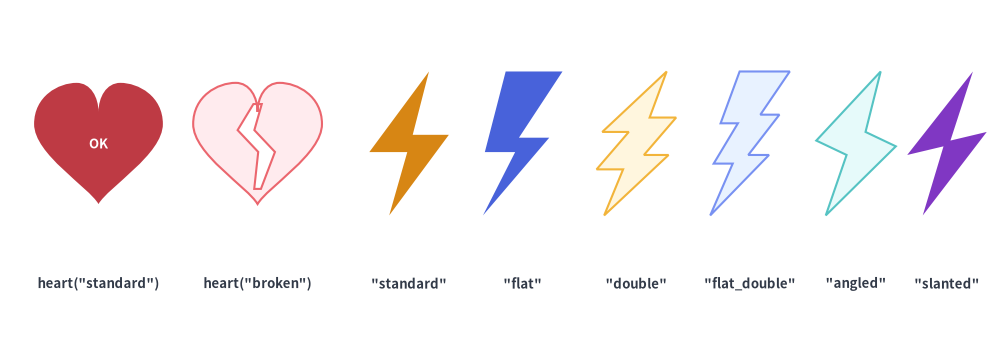
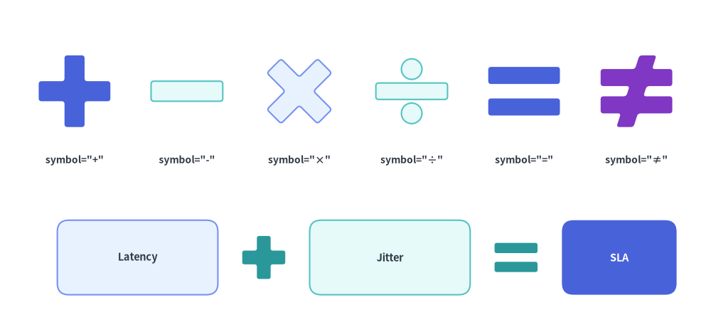

Faces, Clocks, Symbols & Operators
The Faces, Clocks, Symbols & Operators category of drawlib.shapes provides 8 expressive persona, time, celestial, mechanical, and mathematical primitives: 9-expression user/threat faces (face), analog and font-free 7-segment digital clocks (clock), sun and moon schedule/theme symbols (sun, moon), healthcheck hearts (heart), serverless/event lightning bolts (lightning), N-toothed mechanical cogwheels (gear), and 6 geometric mathematical operator symbols (math_symbol).

Source Code
from drawlib.canvas import save, setup
from drawlib.shapes import (
clock,
face,
gear,
heart,
lightning,
math_symbol,
moon,
sun,
)
from drawlib.styles import Styles
from drawlib.text import text
setup(width=128, height=58)
cap_st = Styles.DarkBold.patch(text_size=9.5)
# Row 1: face, clock (analog), clock (digital), sun, moon
face((16, 43), radius=8.2, variant="smile", style=Styles.PrimaryFlat)
text((16, 30), "face", style=cap_st)
clock((42, 43), radius=8.2, variant="ticks", hour=10, minute=10, style=Styles.Neutral)
text((42, 30), 'clock("ticks")', style=cap_st)
clock((70, 43), radius=8.2, variant="digital", hour=12, minute=34, style=Styles.PrimaryFlat)
text((70, 30), 'clock("digital")', style=cap_st)
sun((96, 43), radius=8.5, variant="rays", num_rays=8, style=Styles.WarningFlat)
text((96, 30), "sun", style=cap_st)
moon((116, 43), width=14, height=16, variant="crescent", style=Styles.SecondaryNeutral)
text((116, 30), "moon", style=cap_st)
# Row 2: heart, lightning, gear, math_symbol (+ and =)
heart(
(18, 16),
width=17,
height=15.5,
variant="standard",
style=Styles.DangerNeutral,
text="OK",
text_style=Styles.DarkBold.patch(text_size=9.5),
)
text((18, 3.5), "heart", style=cap_st)
lightning((45, 16), width=11.5, height=18, variant="standard", style=Styles.WarningFlat)
text((45, 3.5), "lightning", style=cap_st)
gear(
(74, 16),
num_teeth=8,
radius_ext=9.2,
radius_int=6.8,
hole_radius=3.0,
style=Styles.PrimaryNeutral,
)
text((74, 3.5), "gear", style=cap_st)
math_symbol((99, 16), symbol="+", width=12, style=Styles.PrimaryFlat.patch(shape_r=0.5))
math_symbol((115, 16), symbol="=", width=12, style=Styles.SecondaryNeutral.patch(shape_r=0.5))
text((107, 3.5), "math_symbol", style=cap_st)
save()
1. Core Geometric Concepts
All 8 symbol primitives anchor cleanly at their center coordinate xy, combining semantic variant presets with expressive geometric parameters that adapt personas, clocks, celestial icons, cogwheels, and operators without manual path math. Watch how face and heart cycle through SLO/threat states, clock advances analog hour & minute hands or switches to font-free 7-segment digital, sun, moon, and lightning morph ray counts, lunar phases, and mirror direction, and gear and math_symbol sculpt cog teeth, center holes, and operator bar thickness:

Source Code
from __future__ import annotations
import math
from drawlib.anim import Animation
from drawlib.canvas import save, setup
from drawlib.icons import code as code_icons
from drawlib.icons import phosphor
from drawlib.lines import line
from drawlib.shapes import (
circle,
clock,
face,
gear,
heart,
lightning,
math_symbol,
moon,
rectangle,
sun,
)
from drawlib.smartarts import SourceCode, SourceCodeStyles
from drawlib.styles import Styles
from drawlib.text import text
W, H = 138.0, 82.0
setup(width=W, height=H)
anim = Animation(fps=10.0, loop=0)
CODE_TEXT_SIZE = 10.0
PT_TO_CANVAS = W / 720.0
FONT_CANVAS = CODE_TEXT_SIZE * PT_TO_CANVAS
LINE_H = FONT_CANVAS * 1.8
PAD_Y = FONT_CANVAS * 1.2
CODE_STYLES = SourceCodeStyles.get("default", font_lang="en", text_size=CODE_TEXT_SIZE).patch(
box_style=Styles.Neutral.patch(shape_fill_color=(0, 0, 0, 0), shape_line_width=0),
)
PANE_HEADER = Styles.Neutral.patch(
shape_fill_color=(238, 243, 250),
shape_line_color=(203, 213, 225),
shape_line_width=1.2,
shape_r=0.0,
)
EDITOR_BODY = Styles.Neutral.patch(
shape_fill_color=(250, 252, 255),
shape_line_color=(203, 213, 225),
shape_line_width=1.2,
shape_r=0.0,
)
TAKEAWAY_BODY = Styles.Neutral.patch(
shape_fill_color=(242, 246, 253),
shape_line_color=(203, 213, 225),
shape_line_width=1.2,
shape_r=0.0,
)
STUDIO_BODY = Styles.Neutral.patch(
shape_fill_color=(239, 243, 249),
shape_line_color=(203, 213, 225),
shape_line_width=1.2,
shape_r=0.0,
)
PART_ITEMS = [
("1. face & heart", "persona & health"),
("2. clock()", "hands & digital"),
("3. sun, moon & bolt", "rays, phase & mirror"),
("4. gear & math", "teeth, hole & ops"),
]
def draw_step_bar(active_part: int) -> None:
"""Draw top 4-part progress bar (active_part is 1..4)."""
pill_w = 31.0
pill_h = 7.4
gap = 2.0
start_x = 4.0 + pill_w / 2.0
cy = 75.2
for idx, (label, sublabel) in enumerate(PART_ITEMS, start=1):
cx = start_x + (idx - 1) * (pill_w + gap)
if idx > 1:
prev_cx = cx - (pill_w + gap)
line(
(prev_cx + pill_w / 2.0 + 0.2, cy),
(cx - pill_w / 2.0 - 0.2, cy),
style=Styles.PrimaryBold if idx <= active_part else Styles.MutedThin,
)
if idx == active_part:
st = Styles.PrimaryFlat.patch(shape_r=1.4)
tst = Styles.WhiteBold.patch(text_size=10.3)
sub_tst = Styles.White.patch(text_size=9.5)
elif idx < active_part:
st = Styles.PrimaryNeutral.patch(shape_r=1.4, shape_line_width=1.1)
tst = Styles.PrimaryBold.patch(text_size=10.3)
sub_tst = Styles.Primary.patch(text_size=9.5)
else:
st = Styles.Neutral.patch(shape_r=1.4, shape_line_width=1.1)
tst = Styles.MutedBold.patch(text_size=10.3)
sub_tst = Styles.Muted.patch(text_size=9.5)
rectangle((cx, cy), width=pill_w, height=pill_h, style=st)
text((cx, cy + 1.35), label, style=tst)
text((cx, cy - 1.55), sublabel, style=sub_tst)
def draw_left_pane(
active_part: int,
code_lines: list[str],
hl_range: tuple[int, int],
icon_fn: object,
summary_title: str,
summary_line1: str,
summary_line2: str,
) -> None:
"""Draw left Python code editor + bottom geometric concept note."""
x0, w = 4.0, 63.5
cx = x0 + w / 2.0
top_y = 63.2
header_h = 5.4
editor_h = 43.8
takeaway_h = 15.8
rectangle((cx, top_y + header_h / 2.0), width=w, height=header_h, style=PANE_HEADER)
code_icons.python((x0 + 3.6, top_y + header_h / 2.0), width=3.4, style=Styles.Neutral)
text(
(x0 + 6.5, top_y + header_h / 2.0),
"symbols_clocks.py",
style=Styles.DarkBold.patch(text_size=10.2, halign="left"),
)
text(
(x0 + w - 2.6, top_y + header_h / 2.0),
f"Part {active_part} / 4",
style=Styles.PrimaryBold.patch(text_size=9.8, halign="right"),
)
rectangle((cx, top_y - editor_h / 2.0), width=w, height=editor_h, style=EDITOR_BODY)
hl_start, hl_end = hl_range
hl_top = top_y - PAD_Y - hl_start * LINE_H
hl_bot = top_y - PAD_Y - (hl_end + 1) * LINE_H
hl_cy = (hl_top + hl_bot) / 2.0
hl_h = hl_top - hl_bot
rectangle(
(cx, hl_cy),
width=w - 0.6,
height=hl_h,
style=Styles.Neutral.patch(shape_fill_color=(229, 239, 255), shape_line_width=0),
)
rectangle(
(x0 + 0.55, hl_cy),
width=0.9,
height=hl_h,
style=Styles.PrimaryFlat.patch(shape_line_width=0),
)
SourceCode.draw(
xy=(x0, top_y),
width=w,
code="\n".join(code_lines),
styles=CODE_STYLES,
code_lang="python",
show_linenum=True,
align="top_left",
)
take_cy = 3.6 + takeaway_h / 2.0
rectangle((cx, take_cy), width=w, height=takeaway_h, style=TAKEAWAY_BODY)
circle(
(x0 + 6.4, take_cy),
radius=3.3,
style=Styles.PrimaryNeutral.patch(shape_line_width=1.2),
)
icon_fn((x0 + 6.4, take_cy), width=3.8, style=Styles.PrimaryBold) # type: ignore[operator]
text(
(x0 + 11.4, take_cy + 3.6),
summary_title,
style=Styles.DarkBold.patch(text_size=10.4, halign="left"),
)
text(
(x0 + 11.4, take_cy - 0.2),
summary_line1,
style=Styles.Dark.patch(text_size=9.7, halign="left"),
)
text(
(x0 + 11.4, take_cy - 3.8),
summary_line2,
style=Styles.PrimaryBold.patch(text_size=9.6, halign="left"),
)
def draw_geometry_studio(param_badge: str, footer_caption: str) -> tuple[float, float]:
"""Draw right geometry lab shell, inner coordinate sheet with subtle grid, and footer."""
x0, w = 70.0, 64.0
cx = x0 + w / 2.0
top_y = 63.2
header_h = 5.4
body_h = 59.6
rectangle((cx, top_y + header_h / 2.0), width=w, height=header_h, style=PANE_HEADER)
phosphor.ruler((x0 + 3.6, top_y + header_h / 2.0), width=3.4, style=Styles.Primary)
text(
(x0 + 6.5, top_y + header_h / 2.0),
"Live Geometry & Guides",
style=Styles.DarkBold.patch(text_size=10.2, halign="left"),
)
text(
(x0 + w - 2.6, top_y + header_h / 2.0),
param_badge,
style=Styles.PrimaryBold.patch(text_size=9.6, halign="right"),
)
rectangle((cx, 3.6 + body_h / 2.0), width=w, height=body_h, style=STUDIO_BODY)
# Inner coordinate sheet (54 x 40) with subtle grid lines visible through holes
sheet_cx, sheet_cy = cx, 36.2
sheet_w, sheet_h = 54.0, 40.0
sx0, sy0 = sheet_cx - sheet_w / 2.0, sheet_cy - sheet_h / 2.0
rectangle(
(sheet_cx, sheet_cy),
width=sheet_w,
height=sheet_h,
style=Styles.Neutral.patch(
shape_fill_color=(255, 255, 255),
shape_line_color=(180, 194, 214),
shape_line_width=1.2,
),
)
g_st = Styles.MutedThin.patch(line_color=(232, 238, 246), line_width=0.8)
for gx in range(1, 6):
vx = sx0 + gx * (sheet_w / 6.0)
line((vx, sy0), (vx, sy0 + sheet_h), style=g_st)
for gy in range(1, 5):
vy = sy0 + gy * (sheet_h / 5.0)
line((sx0, vy), (sx0 + sheet_w, vy), style=g_st)
rectangle(
(cx, 8.4),
width=59.2,
height=5.2,
style=Styles.Neutral.patch(
shape_fill_color=(255, 255, 255),
shape_line_color=(203, 213, 225),
shape_line_width=1.1,
shape_r=2.4,
),
text=footer_caption,
text_style=Styles.DarkBold.patch(text_size=9.8),
)
return sheet_cx, sheet_cy
GHOST_BOX = Styles.MutedDashed.patch(
shape_fill_color=(0, 0, 0, 0),
shape_line_color=(180, 196, 218),
shape_line_width=1.1,
)
# =========================================================================
# Part 1: face & heart — Persona Variants & Healthcheck Liveness
# =========================================================================
PERSONA_STEPS = [
("smile", "PrimaryNeutral", "standard", "SecondaryNeutral", 3.30, 'SLO Healthy: face("smile") • heart("standard")'),
("dizzy", "WarningNeutral", "standard", "SecondaryNeutral", 0.55, 'Degraded Node: face("dizzy") • X Eyes & Wavy Mouth'),
("dead", "DangerNeutral", "broken", "DangerNeutral", 0.55, 'Crashed State: face("dead") • heart("broken")'),
("devil", "DangerFlat", "broken", "SecondaryNeutral", 3.40, 'Threat Actor: face("devil") • heart("broken")'),
]
for f_var, f_st_name, h_var, h_st_name, dur, footer_txt in PERSONA_STEPS:
code_p1 = [
"from drawlib.shapes import face, heart",
"from drawlib.styles import Styles",
"",
"face((36, 30), radius=9.2,",
f' variant="{f_var}",',
f" style=Styles.{f_st_name})",
"",
"heart((64, 30), width=17, height=15.5,",
f' variant="{h_var}",',
f" style=Styles.{h_st_name})",
]
is_incident = h_var == "broken"
with anim.frame(duration=dur):
draw_step_bar(1)
draw_left_pane(
1,
code_p1,
(3, 9) if is_incident else (3, 5),
phosphor.shield_warning if f_var == "devil" else phosphor.smiley,
"Incident & Threat Personas" if is_incident else "Persona & Liveness Presets",
'"dead" & "devil" model crashes and threat actors'
if is_incident
else "face() offers 9 actor & SLO health expressions",
'heart(variant="broken") splits into cracked halves'
if is_incident
else "heart() centers standard or broken states at xy",
)
scx, scy = draw_geometry_studio(f'"{f_var}" / "{h_var}"', footer_txt)
# Top 4-pill persona progression tracker
p_w, p_gap = 11.4, 1.0
p_start = scx - (4 * p_w + 3 * p_gap) / 2.0 + p_w / 2.0
for idx, p_name in enumerate(("smile", "dizzy", "dead", "devil")):
px = p_start + idx * (p_w + p_gap)
active = p_name == f_var
pill_st = (
(Styles.DangerFlat if p_name == "devil" else Styles.PrimaryFlat).patch(shape_r=1.1)
if active
else Styles.Neutral.patch(shape_r=1.1, shape_line_width=1.0)
)
pill_tst = Styles.WhiteBold.patch(text_size=9.5) if active else Styles.MutedBold.patch(text_size=9.5)
rectangle((px, 51.8), width=p_w, height=4.2, style=pill_st, text=p_name, text_style=pill_tst)
fx, fy = scx - 13.0, scy - 1.8
hx, hy = scx + 13.5, scy - 1.8
line((scx + 0.2, 19.5), (scx + 0.2, 47.0), style=Styles.MutedDashed.patch(line_width=0.9))
if f_var != "devil":
circle((fx, fy), radius=9.2, style=GHOST_BOX)
face((fx, fy), radius=9.2, variant=f_var, style=getattr(Styles, f_st_name))
text((fx, 20.2), f'face("{f_var}")', style=Styles.DarkBold.patch(text_size=9.6))
rectangle((hx, hy), width=17.0, height=15.5, style=GHOST_BOX)
heart((hx, hy), width=17.0, height=15.5, variant=h_var, style=getattr(Styles, h_st_name))
h_lbl_st = Styles.DangerBold.patch(text_size=9.6) if is_incident else Styles.DarkBold.patch(text_size=9.6)
text((hx, 20.2), f'heart("{h_var}")', style=h_lbl_st)
# =========================================================================
# Part 2: clock — Smooth Analog Hand Progression & 7-Segment Digital
# =========================================================================
CLOCK_STEPS = [
("ticks", 10, 10, "PrimaryNeutral", 3.30, 'Analog "ticks" • hour=10, minute=10 (10:10)'),
("ticks", 12, 28, "PrimaryNeutral", 0.50, "Advancing Hands Clockwise • 10:10 → 12:28"),
("stopwatch", 14, 45, "SecondaryNeutral", 3.30, "Stopwatch Variant • hour=14, minute=45 (14:45)"),
("digital", 14, 45, "PrimaryFlat", 3.50, 'variant="digital" • Font-Free 7-Segment 14:45'),
]
for c_var, hr, mn, c_st_name, dur, footer_txt in CLOCK_STEPS:
code_p2 = [
"from drawlib.shapes import clock",
"from drawlib.styles import Styles",
"",
"# Analog dial/stopwatch or 7-seg HH:MM",
"clock(",
" (50, 30), radius=13.0,",
f' variant="{c_var}",',
f" hour={hr}, minute={mn},",
f" style=Styles.{c_st_name},",
")",
]
is_dig = c_var == "digital"
with anim.frame(duration=dur):
draw_step_bar(2)
draw_left_pane(
2,
code_p2,
(6, 7),
phosphor.timer if c_var == "stopwatch" else phosphor.clock,
"Font-Free 7-Segment Digital" if is_dig else "Analog Dial & Stopwatch Hands",
'variant="digital" renders pure-vector HH:MM digits'
if is_dig
else "hour & minute advance hands smoothly from 12:00",
"Housing spans 1.8 × radius wide by 1.0 × radius"
if is_dig
else '"stopwatch" adds top crown stem & 45° side pusher',
)
badge = f'{hr:02d}:{mn:02d} ("{c_var}")'
scx, scy = draw_geometry_studio(badge, footer_txt)
r_c = 13.0
if is_dig:
cy_d = scy - 0.5
circle((scx, cy_d), radius=r_c, style=GHOST_BOX)
clock((scx, cy_d), radius=r_c, variant="digital", hour=hr, minute=mn, style=Styles.PrimaryFlat)
w_d, h_d = 1.8 * r_c, 1.0 * r_c
line(
(scx - w_d / 2.0, cy_d + h_d / 2.0 + 3.0),
(scx + w_d / 2.0, cy_d + h_d / 2.0 + 3.0),
arrow_head="<->",
style=Styles.PrimaryBold.patch(line_width=1.4),
)
text((scx, cy_d + h_d / 2.0 + 6.2), "width = 1.8 × radius", style=Styles.PrimaryBold.patch(text_size=9.6))
line(
(scx + w_d / 2.0 + 3.0, cy_d - h_d / 2.0),
(scx + w_d / 2.0 + 3.0, cy_d + h_d / 2.0),
arrow_head="<->",
style=Styles.DarkBold.patch(line_width=1.4),
)
text((scx + w_d / 2.0 + 4.4, cy_d), "1.0r", style=Styles.DarkBold.patch(text_size=9.5, halign="left"))
text((scx, 19.6), "Zero Font Dependencies • No Ghost Segments", style=Styles.MutedBold.patch(text_size=9.5))
else:
cy_c = scy - 2.2 if c_var == "stopwatch" else scy - 0.6
clock((scx, cy_c), radius=r_c, variant=c_var, hour=hr, minute=mn, style=getattr(Styles, c_st_name))
lbl_st = Styles.MutedBold.patch(text_size=9.5)
text((scx + r_c + 2.2, cy_c), "3h (0°)", style=lbl_st.patch(halign="left"))
text((scx - r_c - 2.2, cy_c), "9h (180°)", style=lbl_st.patch(halign="right"))
if c_var == "ticks":
text((scx, cy_c + r_c + 2.8), "12h (90°)", style=Styles.PrimaryBold.patch(text_size=9.6))
text((scx, cy_c - r_c - 2.8), "6h (-90°)", style=lbl_st)
else:
text((scx + 11.4, cy_c + 11.6), "45° Pusher", style=Styles.PrimaryBold.patch(text_size=9.5, halign="left"))
line(
(scx - 6.6, cy_c + 15.2),
(scx - 4.7, cy_c + 15.2),
style=Styles.DarkBold.patch(line_width=1.1),
)
text((scx - 7.2, cy_c + 15.2), "Crown Stem", style=Styles.DarkBold.patch(text_size=9.5, halign="right"))
text((scx, 18.6), "Smooth Hour (2.75h) & Minute (45m) Hands", style=Styles.PrimaryBold.patch(text_size=9.5))
# =========================================================================
# Part 3: sun, moon & lightning — Rays, Lunar Phases & Horizontal Mirror
# =========================================================================
SUN_STEPS = [
("rays", 6, "WarningNeutral", 0.55, 'sun(variant="rays", num_rays=6) • Triangular Rays'),
("rays", 9, "WarningNeutral", 0.45, 'sun(variant="rays", num_rays=9) • Adding Rays'),
("beams", 12, "WarningFlat", 3.30, 'sun(variant="beams", num_rays=12) • 12 Beam Bars'),
]
for s_var, n_rays, s_st_name, dur, footer_txt in SUN_STEPS:
code_s = [
"from drawlib.shapes import sun",
"from drawlib.styles import Styles",
"",
"# Inner disc = 0.54 * outer tip radius",
"sun(",
" (50, 30), radius=13.8,",
f' variant="{s_var}",',
f" num_rays={n_rays},",
f" style=Styles.{s_st_name},",
")",
]
with anim.frame(duration=dur):
draw_step_bar(3)
draw_left_pane(
3,
code_s,
(6, 7),
phosphor.sun,
"Solar Rays & Rectangular Beams",
"num_rays scales radial count around 0.54r disc",
'"rays", "ring", and "beams" switch ray geometry',
)
scx, scy = draw_geometry_studio(f"num_rays = {n_rays}", footer_txt)
cy_s, r_s = scy - 0.8, 13.8
circle((scx, cy_s), radius=r_s, style=GHOST_BOX)
sun((scx, cy_s), radius=r_s, variant=s_var, num_rays=n_rays, style=getattr(Styles, s_st_name))
circle(
(scx, cy_s),
radius=0.54 * r_s,
style=Styles.MutedDashed.patch(
shape_fill_color=(0, 0, 0, 0),
shape_line_color=(59, 130, 246),
shape_line_width=1.1,
),
)
if n_rays == 12:
line((scx, cy_s), (scx + r_s, cy_s), arrow_head="->", style=Styles.DarkBold.patch(line_width=1.4))
text((scx + r_s + 1.8, cy_s), "radius", style=Styles.DarkBold.patch(text_size=9.5, halign="left"))
text((scx, cy_s + r_s + 3.0), '12 Rectangular "beams" • Disc = 0.54r', style=Styles.PrimaryBold.patch(text_size=9.6))
MOON_BOLT_STEPS = [
("crescent", False, "standard", "PrimaryNeutral", 3.20, 'moon("crescent", mirror=False) + bolt("standard")'),
("waxing", True, "double", "WarningFlat", 3.40, 'moon("waxing", mirror=True) + lightning("double")'),
]
for m_var, m_mir, b_var, b_st_name, dur, footer_txt in MOON_BOLT_STEPS:
code_mb = [
"from drawlib.shapes import lightning, moon",
"from drawlib.styles import Styles",
"",
"moon((35, 30), width=15, height=19,",
f' variant="{m_var}", mirror={m_mir},',
" style=Styles.SecondaryNeutral)",
"",
"lightning((65, 30), width=13, height=21,",
f' variant="{b_var}",',
f" style=Styles.{b_st_name})",
]
with anim.frame(duration=dur):
draw_step_bar(3)
draw_left_pane(
3,
code_mb,
(3, 9),
phosphor.moon if m_mir else phosphor.lightning,
"Lunar Phases, Mirror & Bolts",
'"crescent" → "waxing" + mirror=True flips moon',
'lightning("double") adds a 2-step zig-zag stage',
)
scx, scy = draw_geometry_studio(f"mirror = {m_mir}", footer_txt)
mx, my = scx - 13.0, scy - 0.8
bx, by = scx + 13.5, scy - 0.8
line((scx + 0.2, 19.5), (scx + 0.2, 52.0), style=Styles.MutedDashed.patch(line_width=0.9))
rectangle((mx, my), width=15.0, height=19.0, style=GHOST_BOX)
moon((mx, my), width=15.0, height=19.0, variant=m_var, mirror=m_mir, style=Styles.SecondaryNeutral)
mir_lbl = "mirror=True (Tips ←)" if m_mir else "mirror=False (Tips →)"
mir_st = Styles.PrimaryBold.patch(text_size=9.5) if m_mir else Styles.MutedBold.patch(text_size=9.5)
text((mx, 50.8), mir_lbl, style=mir_st)
text((mx, 20.2), f'moon("{m_var}")', style=Styles.DarkBold.patch(text_size=9.6))
rectangle((bx, by), width=13.0, height=21.0, style=GHOST_BOX)
lightning((bx, by), width=13.0, height=21.0, variant=b_var, style=getattr(Styles, b_st_name))
b_top_lbl = "2-Step Multi-Jag" if b_var == "double" else "1-Step Classic"
b_top_st = Styles.PrimaryBold.patch(text_size=9.5) if b_var == "double" else Styles.MutedBold.patch(text_size=9.5)
text((bx, 50.8), b_top_lbl, style=b_top_st)
text((bx, 20.2), f'"{b_var}"', style=Styles.DarkBold.patch(text_size=9.6))
# =========================================================================
# Part 4: gear & math_symbol — Parametric Cogwheels & Geometric Operators
# =========================================================================
GEAR_STEPS = [
(6, None, None, 0.55, "gear(num_teeth=6, hole_radius=None) • Solid Core"),
(8, 2.2, 0.4, 0.50, "gear(num_teeth=8, hole_radius=2.2, shape_r=0.4)"),
(10, 3.6, 0.8, 3.50, "gear(num_teeth=10, hole_radius=3.6, shape_r=0.8)"),
]
for n_teeth, h_rad, s_r, dur, footer_txt in GEAR_STEPS:
hole_str = "None" if h_rad is None else f"{h_rad:.1f}"
code_g = [
"from drawlib.shapes import gear",
"from drawlib.styles import Styles",
"",
"gear(",
f" (50, 30), num_teeth={n_teeth},",
" radius_ext=13.2, radius_int=9.4,",
f" hole_radius={hole_str},",
]
if s_r is None:
code_g.append(" style=Styles.PrimaryNeutral,")
hl_g = (4, 6)
g_style = Styles.PrimaryNeutral
else:
code_g.extend([
" style=Styles.PrimaryNeutral.patch(",
f" shape_r={s_r:.1f},",
" ),",
])
hl_g = (4, 8)
g_style = Styles.PrimaryNeutral.patch(shape_r=s_r)
code_g.append(")")
with anim.frame(duration=dur):
draw_step_bar(4)
draw_left_pane(
4,
code_g,
hl_g,
phosphor.gear,
"Parametric Cogwheels (gear)",
"Teeth span radius_int (roots) to radius_ext (tips)",
"hole_radius carves center; shape_r fillets teeth",
)
scx, scy = draw_geometry_studio(f"num_teeth = {n_teeth}", footer_txt)
cy_g, r_ext, r_int = scy - 0.4, 13.2, 9.4
gear(
(scx, cy_g),
num_teeth=n_teeth,
radius_ext=r_ext,
radius_int=r_int,
hole_radius=h_rad,
style=g_style,
)
# Dashed radius_ext (blue) and radius_int (red) guide circles
circle(
(scx, cy_g),
radius=r_ext,
style=Styles.MutedDashed.patch(
shape_fill_color=(0, 0, 0, 0),
shape_line_color=(37, 99, 235),
shape_line_width=1.2,
),
)
circle(
(scx, cy_g),
radius=r_int,
style=Styles.MutedDashed.patch(
shape_fill_color=(0, 0, 0, 0),
shape_line_color=(220, 38, 38),
shape_line_width=1.2,
),
)
ang_e = math.radians(35.0)
line(
(scx + r_ext * math.cos(ang_e), cy_g + r_ext * math.sin(ang_e)),
(scx + 14.0, cy_g + 10.6),
style=Styles.PrimaryBold.patch(line_width=1.1),
)
text((scx + 14.5, cy_g + 10.6), "radius_ext", style=Styles.PrimaryBold.patch(text_size=9.5, halign="left"))
ang_i = math.radians(-35.0)
line(
(scx + r_int * math.cos(ang_i), cy_g + r_int * math.sin(ang_i)),
(scx + 14.0, cy_g - 10.2),
style=Styles.DangerBold.patch(line_width=1.1),
)
text((scx + 14.5, cy_g - 10.2), "radius_int", style=Styles.DangerBold.patch(text_size=9.5, halign="left"))
if h_rad is not None and h_rad >= 3.0:
line(
(scx - h_rad + 0.3, cy_g),
(scx + h_rad - 0.3, cy_g),
arrow_head="<->",
style=Styles.DarkBold.patch(line_width=1.4),
)
text((scx, 19.2), "hole_radius = 3.6 • Filleted Teeth (shape_r = 0.8)", style=Styles.DarkBold.patch(text_size=9.5))
MATH_STEPS = [
("+", 0.22, "SecondaryNeutral", 0.55, 'math_symbol("+", thickness_ratio=0.22) • Thin Bars'),
("×", 0.28, "PrimaryNeutral", 0.55, 'math_symbol("×", thickness_ratio=0.28) • 45° Cross'),
("≠", 0.34, "PrimaryFlat", 3.50, 'math_symbol("≠", thickness_ratio=0.34) • Bold Bars'),
]
for sym, tr, m_st_name, dur, footer_txt in MATH_STEPS:
code_m = [
"from drawlib.shapes import math_symbol",
"from drawlib.styles import Styles",
"",
"math_symbol(",
f' (50, 30), symbol="{sym}",',
" width=18.5,",
f" thickness_ratio={tr:.2f},",
f" style=Styles.{m_st_name}.patch(",
" shape_r=0.6,",
" ),",
")",
]
with anim.frame(duration=dur):
draw_step_bar(4)
draw_left_pane(
4,
code_m,
(4, 6),
phosphor.math_operations,
"Geometric Operators (math_symbol)",
"Renders +, -, ×, ÷, =, ≠ as unified vector contours",
"thickness_ratio scales bar width vs. bounding box",
)
scx, scy = draw_geometry_studio(f"ratio = {tr:.2f}", footer_txt)
# Top 3-step operator & thickness tracker
mp_w, mp_gap = 15.0, 1.5
mp_start = scx - (3 * mp_w + 2 * mp_gap) / 2.0 + mp_w / 2.0
for idx, (s_tok, r_tok) in enumerate((("+", "0.22"), ("×", "0.28"), ("≠", "0.34"))):
mpx = mp_start + idx * (mp_w + mp_gap)
active = s_tok == sym
mp_st = (
Styles.PrimaryFlat.patch(shape_r=1.1)
if active
else Styles.Neutral.patch(shape_r=1.1, shape_line_width=1.0)
)
mp_tst = Styles.WhiteBold.patch(text_size=9.5) if active else Styles.MutedBold.patch(text_size=9.5)
rectangle((mpx, 51.6), width=mp_w, height=4.2, style=mp_st, text=f'"{s_tok}" ({r_tok})', text_style=mp_tst)
cy_m, w_m = scy - 2.0, 18.5
rectangle((scx, cy_m), width=w_m, height=w_m, style=GHOST_BOX)
math_symbol(
(scx, cy_m),
symbol=sym,
width=w_m,
thickness_ratio=tr,
style=getattr(Styles, m_st_name).patch(shape_r=0.6),
)
line(
(scx - w_m / 2.0, cy_m - w_m / 2.0 - 2.6),
(scx + w_m / 2.0, cy_m - w_m / 2.0 - 2.6),
arrow_head="<->",
style=Styles.PrimaryBold.patch(line_width=1.4),
)
text((scx, 18.8), "width = 18.5 (Square Box)", style=Styles.PrimaryBold.patch(text_size=9.6))
if sym == "≠":
line(
(scx + w_m / 2.0 + 0.4, cy_m + 3.2),
(scx + w_m / 2.0 + 2.6, cy_m + 3.2),
style=Styles.DangerBold.patch(line_width=1.2),
)
text(
(scx + w_m / 2.0 + 3.1, cy_m + 3.2),
"thickness\nratio = 0.34",
style=Styles.DangerBold.patch(text_size=9.5, halign="left"),
)
save()
- Persona & Health Presets (
face&heart): Semanticvariantpresets switch facial expressions ("smile".."devil") and toggle"standard"vs."broken"liveness hearts atxy. - Analog Hands & Font-Free Digital (
clock):hourandminutesmoothly advance analog dial/stopwatch hands clockwise from90°(12:00), or render pure-vector 7-segmentHH:MMdigits onvariant="digital". - Celestial Rays, Lunar Phases & Mirroring (
sun,moon,lightning):num_raysandvariantreshape solar beams and moon phases, whilemirror=Trueflipsmoonandlightninghorizontally across-X/+X. - Parametric Cogwheels & Operators (
gear&math_symbol):num_teeth,radius_ext,radius_int,hole_radius, andstyle.shape_rsculpt cogwheels, whilethickness_ratioscales unified operator bars ("+","×","≠").
2. Quick Comparison of Faces, Clocks, Symbols & Operators
Use the summary matrix below to compare required geometry arguments, built-in variants, key modifiers, and primary diagram roles across all 8 functions:
| Function | Required Geometry Args | Variants | Key Geometry Modifiers | Primary Diagram Use Cases |
|---|---|---|---|---|
face |
xy, radius |
"smile", "neutral", "surprised", "sad", "angry", "dizzy", "dead", "skull", "devil" |
style.angle |
User/actor personas, SLO health sentiment, crashed nodes ("dead"), threat actors ("devil", "skull"). |
clock |
xy, radius |
"standard", "ticks" ("dial"), "alarm", "stopwatch" ("timer"), "digital" |
hour=10.0, minute=10.0 |
Cron jobs, SLA timers, latency stopwatches, and font-free 7-segment HH:MM digital timestamps. |
sun |
xy, radius |
"rays" ("standard"), "ring", "beams" |
num_rays: int = 8 |
Daytime schedules, light theme icons, solar/clean energy nodes, brightness indicators. |
moon |
xy, width, height |
"crescent" ("standard"), "thin", "waxing", "half" |
mirror: bool = False |
Nightly batch/backup jobs, dark theme icons, sleep/idle states. |
heart |
xy, width, height |
"standard" ("classic"), "broken" |
style.angle |
Liveness/healthcheck probes ("standard"), degraded/unhealthy service states ("broken"). |
lightning |
xy, width, height |
"standard", "flat", "double", "flat_double", "angled", "slanted" |
mirror=False, style.shape_r |
Serverless functions, event/webhook triggers, cache hits, power/burst compute. |
gear |
xy, num_teeth, radius_ext, radius_int |
Solid core (hole_radius=None) or Ring (hole_radius > 0) |
tooth_ext_ratio, tooth_int_ratio, style.shape_r |
Background worker daemons, CI/CD automation engines, configuration/settings nodes. |
math_symbol |
xy, symbol, width |
"+", "-", "×", "÷", "=", "≠" (plus word aliases) |
height=None, thickness_ratio, style.shape_r |
Visual architecture formulas ([Service A] + [Cache] = [Low Latency]), comparison matrices. |
3. Expressive Actor, Status & Threat Faces (face)
For user personas, customer journey maps, system health indicators, and threat/attacker modeling, face renders a circular or silhouette face with nine built-in expressions (variant):
face(
xy: tuple[float, float],
radius: float,
*,
style: Style,
variant: Literal[
"smile", "neutral", "sad", "angry", "surprised",
"dizzy", "dead", "skull", "devil",
] = "smile",
text: str = "",
text_style: Style | None = None,
) -> None
Parameter Reference & variant Options
| Parameter | Type | Default | Description |
|---|---|---|---|
xy |
tuple[float, float] |
Required | Center coordinate (x, y) of the face. |
radius |
float |
Required | Outer radius of the face (> 0). |
variant |
FaceVariant |
"smile" |
Facial expression or persona variant (case-insensitive): • "smile": Upward cubic-Bézier smile curve.• "neutral": Straight horizontal mouth line.• "surprised": Elliptical open 'O' mouth.• "sad": Downward cubic-Bézier frown curve.• "angry": Downward frown curve plus inward-slanted eyebrows.• "dizzy": Crossed 'X' eyes + wavy mouth (overloaded / degraded node).• "dead": Crossed 'X' eyes + flat mouth with hanging tongue (crashed / OOM killed).• "skull": Cranium + jawbone silhouette with hollow eye sockets, nasal cavity, and teeth (fatal / poison pill).• "devil": Curved horns + slanted eyebrows + sinister grin (attacker / malicious actor). |
style |
Style |
Required | Face fill, outline, and rotation (angle). Features automatically use style.shape_line_color when a border is present, or high-contrast text_color/white on flat borderless styles (Styles.PrimaryFlat). |
text / text_style |
str / Style | None |
"" / None |
Optional text label and typography style. |
from drawlib.canvas import save, setup
from drawlib.shapes import face
from drawlib.styles import Styles
from drawlib.text import text
setup(width=132, height=44)
variants = [
("smile", Styles.PrimaryFlat),
("neutral", Styles.Neutral),
("surprised", Styles.SecondaryNeutral),
("sad", Styles.Neutral),
("angry", Styles.WarningNeutral),
("dizzy", Styles.WarningNeutral),
("dead", Styles.DangerNeutral),
("skull", Styles.Neutral),
("devil", Styles.DangerFlat),
]
for i, (v_name, st) in enumerate(variants):
cx = 10 + i * 14.0
face((cx, 26), radius=5.6, style=st, variant=v_name)
text((cx, 11), f'"{v_name}"', style=Styles.DarkBold.patch(text_size=9.5))
save()

4. Analog & Font-Free Digital Clocks (clock)
clock renders either an analog clock face with dynamically angled hour and minute hands ("standard", "ticks", "alarm", "stopwatch") or a font-free 7-segment digital clock ("digital"):
clock(
xy: tuple[float, float],
radius: float,
*,
variant: Literal[
"standard",
"ticks", "dial",
"alarm",
"stopwatch", "timer",
"digital",
] = "standard",
hour: float = 10.0,
minute: float = 10.0,
style: Style,
text: str = "",
text_style: Style | None = None,
) -> None
Parameter & variant Reference
| Parameter | Type | Default | Description |
|---|---|---|---|
xy |
tuple[float, float] |
Required | Center coordinate (x, y) of the clock dial or digital housing. |
radius |
float |
Required | Dial radius (> 0). For variant="digital", the rectangular housing has width 1.8 * radius and height 1.0 * radius. |
variant |
ClockVariant |
"standard" |
Clock style (see Clock variant Comparison below). |
hour |
float |
10.0 |
Hour value (0–23). On analog variants, the hour hand smoothly advances with minute (angle_hour = 90° - ((hour % 12) + minute / 60) * 30°). On variant="digital", formatted as zero-padded HH (int(hour) % 24). |
minute |
float |
10.0 |
Minute value (0–59). On analog variants, angle_minute = 90° - minute * 6°. On variant="digital", formatted as zero-padded MM (int(minute) % 60). |
style |
Style |
Required | Fill, border, and rotation (angle) style. Hands, ticks, and 7-segment digits automatically select high-contrast stroke/fill colors (White on dark/flat fills, Dark on light/neutral fills). |
text / text_style |
str / Style | None |
"" / None |
Optional text label centered at xy. |
variant |
Accepted Aliases | Visual Anatomy | Typical Use Cases |
|---|---|---|---|
"standard" (default) |
— | Clean circular dial + center pivot dot + hour & minute hands | Minimalist cron/schedule icons, TTL indicators. |
"ticks" |
"dial" |
Circular dial + 12 radial hour tick marks (major ticks at 12, 3, 6, 9) + hands | Scheduled batch jobs, uptime clocks, time-series windows. |
"alarm" |
— | Circular dial + 12 ticks + twin top hemisphere bells + two angled bottom legs | Alerting thresholds, PagerDuty/on-call wakeups, SLA deadlines. |
"stopwatch" |
"timer" |
Circular dial + 12 ticks + top crown stem + angled 45° side pusher button |
Latency benchmarks, request timeout budgets, profiling timers. |
"digital" |
— | Rounded rectangular housing (1.8r × 1.0r) + pure-vector 7-segment HH:MM digits + colon dots |
Exact timestamp markers (00:00, 12:34, 23:59) with zero font dependencies and no ghost background segments. |
from drawlib.canvas import save, setup
from drawlib.shapes import clock
from drawlib.styles import Styles
from drawlib.text import text
setup(width=130, height=48)
lbl = Styles.DarkBold.patch(text_size=9.5)
# 1. Standard minimal analog clock (10:10)
clock((15, 27), radius=8.8, variant="standard", hour=10, minute=10, style=Styles.Neutral)
text((15, 8.5), '"standard" (10:10)', style=lbl)
# 2. Ticks / dial analog clock (03:00)
clock((40, 27), radius=8.8, variant="ticks", hour=3, minute=0, style=Styles.PrimaryNeutral)
text((40, 8.5), '"ticks" (03:00)', style=lbl)
# 3. Alarm clock with twin bells & legs (07:30)
clock((65, 27), radius=8.2, variant="alarm", hour=7, minute=30, style=Styles.DangerNeutral)
text((65, 8.5), '"alarm" (07:30)', style=lbl)
# 4. Stopwatch / timer with top stem & side pusher (00:15)
clock((90, 27), radius=8.2, variant="stopwatch", hour=0, minute=15, style=Styles.SecondaryNeutral)
text((90, 8.5), '"stopwatch" (00:15)', style=lbl)
# 5. Font-free 7-segment digital clock (23:45)
clock((116, 27), radius=8.8, variant="digital", hour=23, minute=45, style=Styles.PrimaryFlat)
text((116, 8.5), '"digital" (23:45)', style=lbl)
save()

5. Celestial & Theme Symbols (sun, moon)
For light/dark theme toggles, daytime vs. nightly batch windows, and geographic time-of-day indicators, sun and moon provide multiple geometric variants:
sun(
xy: tuple[float, float],
radius: float,
*,
variant: Literal[
"rays", "standard",
"ring",
"beams",
] = "rays",
num_rays: int = 8,
style: Style,
text: str = "",
text_style: Style | None = None,
) -> None
moon(
xy: tuple[float, float],
width: float,
height: float,
*,
variant: Literal[
"crescent", "standard",
"thin",
"waxing",
"half",
] = "crescent",
mirror: bool = False,
style: Style,
text: str = "",
text_style: Style | None = None,
) -> None
| Function | Parameter | Type | Default | Description |
|---|---|---|---|---|
sun |
xy / radius |
tuple / float |
Required | Center coordinate (cx, cy) and outer tip radius (> 0). Inner sun disc radius is 0.54 * radius. |
variant |
SunVariant |
"rays" |
• "rays" ("standard"): Solid center disc surrounded by num_rays detached triangular rays.• "ring": Hollow center annular ring surrounded by num_rays triangular rays.• "beams": Solid center disc surrounded by num_rays rectangular beam bars. |
|
num_rays |
int |
8 |
Number of radial rays (>= 3, typically 8 or 12). |
|
moon |
xy / width / height |
tuple / float |
Required | Center coordinate (x, y) and exact outer bounding width and height (> 0). |
variant |
MoonVariant |
"crescent" |
• "crescent" ("standard"): Classic balanced crescent moon.• "thin": Slender, deeply scooped crescent.• "waxing": Wide, fuller crescent with ample room for embedded text.• "half": Straight-chord D-shaped half moon. |
|
mirror |
bool |
False |
By default (mirror=False), the outer convex curve faces left (-X) and tips point right (+X). Set mirror=True to flip horizontally. |
from drawlib.canvas import save, setup
from drawlib.shapes import moon, sun
from drawlib.styles import Styles
from drawlib.text import text
setup(width=130, height=46)
lbl = Styles.DarkBold.patch(text_size=9.5)
# Sun variants (rays, ring, beams)
sun((14, 27), radius=8.8, variant="rays", num_rays=8, style=Styles.WarningFlat)
text((14, 8.5), 'sun("rays")', style=lbl)
sun((35, 27), radius=8.8, variant="ring", num_rays=8, style=Styles.WarningNeutral)
text((35, 8.5), 'sun("ring")', style=lbl)
sun((56, 27), radius=8.8, variant="beams", num_rays=10, style=Styles.PrimaryFlat)
text((56, 8.5), 'sun("beams")', style=lbl)
# Moon variants (crescent, thin, waxing, half)
moon((76, 27), width=13, height=16, variant="crescent", style=Styles.SecondaryNeutral)
text((76, 8.5), '"crescent"', style=lbl)
moon((93, 27), width=11, height=16, variant="thin", style=Styles.PrimaryNeutral)
text((93, 8.5), '"thin"', style=lbl)
moon((109, 27), width=14, height=16, variant="waxing", mirror=True, style=Styles.SecondaryNeutral)
text((109, 8.5), '"waxing"', style=lbl)
moon((123, 27), width=9, height=16, variant="half", style=Styles.Neutral)
text((123, 8.5), '"half"', style=lbl)
save()

6. Health Hearts & Event Lightning Bolts (heart, lightning)
6.1. Liveness & Healthcheck Hearts (heart)
heart renders a smooth cubic-Bézier heart ("standard") or a split two-piece cracked heart ("broken") for service healthchecks, SLA status cards, and user engagement metrics:
heart(
xy: tuple[float, float],
width: float,
height: float,
*,
variant: Literal[
"standard", "classic",
"broken",
] = "standard",
style: Style,
text: str = "",
text_style: Style | None = None,
) -> None
6.2. Serverless & Event Lightning Bolts (lightning)
lightning renders a high-voltage bolt silhouette with six geometric styles, optional horizontal reversal (mirror=True), and optional vertex rounding (style.shape_r):
lightning(
xy: tuple[float, float],
width: float,
height: float,
*,
variant: Literal[
"standard",
"flat",
"double",
"flat_double",
"angled",
"slanted",
] = "standard",
mirror: bool = False,
style: Style,
text: str = "",
text_style: Style | None = None,
) -> None
lightning Variant |
Top Edge | Zig-Zag Stages | Typical Use Cases |
|---|---|---|---|
"standard" (default) |
Pointed apex | 1-step classic bolt | Serverless functions (Lambda/Cloud Functions), webhook/event triggers, fast cache hits. |
"flat" |
Flat horizontal top bar | 1-step classic bolt | Classic battery/charging icons and bold industrial hazard markers. |
"double" |
Pointed apex | 2-step multi-jag bolt | High-voltage surges, cascading event streams, spike alerts. |
"flat_double" |
Flat horizontal top bar | 2-step multi-jag bolt | Heavy power/burst compute indicators. |
"angled" / "slanted" |
Slanted diagonal top edge | Asymmetric dynamic bolt | Action callouts and tilted comic/presentation accents. |
from drawlib.canvas import save, setup
from drawlib.shapes import heart, lightning
from drawlib.styles import Styles
from drawlib.text import text
setup(width=132, height=46)
lbl = Styles.DarkBold.patch(text_size=9.5)
# 1. Heart variants ("standard" and "broken")
heart(
(13, 27),
width=17,
height=16,
variant="standard",
style=Styles.DangerFlat,
text="OK",
text_style=Styles.WhiteBold.patch(text_size=9.5),
)
text((13, 8.5), 'heart("standard")', style=lbl)
heart((34, 27), width=17, height=16, variant="broken", style=Styles.DangerNeutral)
text((34, 8.5), 'heart("broken")', style=lbl)
# 2. All 6 Lightning variants
bolt_specs = [
("standard", 54, Styles.WarningFlat),
("flat", 69, Styles.PrimaryFlat),
("double", 84, Styles.WarningNeutral),
("flat_double", 99, Styles.PrimaryNeutral),
("angled", 113, Styles.SecondaryNeutral),
("slanted", 125, Styles.AccentFlat),
]
for var, cx, st in bolt_specs:
lightning((cx, 27), width=10.5, height=19, variant=var, style=st)
text((cx, 8.5), f'"{var}"', style=lbl)
save()

7. Gears & Cogwheels (gear)
For automation engines, background workers, CI/CD runners, and system settings, gear renders an N-toothed mechanical cogwheel with circular root valleys, configurable tooth tip/base ratios, and an optional transparent center hole:
gear(
xy: tuple[float, float],
num_teeth: int,
radius_ext: float,
radius_int: float,
*,
tooth_ext_ratio: float | None = None,
tooth_int_ratio: float | None = None,
hole_radius: float | None = None,
style: Style,
text: str = "",
text_style: Style | None = None,
) -> None
Parameter Reference
| Parameter | Type | Default | Description |
|---|---|---|---|
xy |
tuple[float, float] |
Required | Center coordinate (x, y) of the gear. |
num_teeth |
int |
Required | Number of gear teeth (>= 3, typically 6 to 12). Defines the angular pitch pitch = 360° / num_teeth. |
radius_ext |
float |
Required | Outer tooth tip radius (> radius_int). |
radius_int |
float |
Required | Inner root valley radius (0 < radius_int < radius_ext). |
tooth_ext_ratio |
float | None |
None |
Fraction of one pitch angle pitch occupied by the outer tooth tip in (0.0, 1.0). Defaults to 0.35. Must satisfy tooth_ext_ratio <= tooth_int_ratio. |
tooth_int_ratio |
float | None |
None |
Fraction of one pitch angle pitch occupied by the inner tooth base in (0.0, 1.0). Defaults to 0.55. Must satisfy tooth_int_ratio >= tooth_ext_ratio. |
hole_radius |
float | None |
None |
Radius of the transparent circular cutout in the center (0 < hole_radius < radius_int). When None (default), the gear has a solid core ideal for displaying text. |
style |
Style |
Required | Fill, border, rotation (angle), and tooth corner rounding (shape_r: scalar float or (4 * num_teeth)-tuple). |
text / text_style |
str / Style | None |
"" / None |
Centered text label and optional typography override. |
Tooth Geometry & Customization Rules
- Trapezoidal vs. Square Teeth: By default (
tooth_ext_ratio=0.35,tooth_int_ratio=0.55), each tooth tapers outward like a realistic involute gear. Setting both ratios equal (e.g.tooth_ext_ratio=0.45, tooth_int_ratio=0.45) produces straight-sided radial teeth. - Root Arcs & Corner Rounding (
style.shape_r): Whenstyle.shape_risNone, root valleys and outer tips follow true circular arcs of radiiradius_intandradius_ext. Whenstyle.shape_ris set (e.g.Styles.PrimaryNeutral.patch(shape_r=0.8)), all4 * num_teethtooth corners are smoothly filleted. - Solid Core vs. Center Hole (
hole_radius): Omithole_radiuswhen placing a text label inside the gear; specifyhole_radius(e.g.0.4 * radius_int) for a classic ring-style cogwheel.
from drawlib.canvas import save, setup
from drawlib.shapes import gear
from drawlib.styles import Styles
from drawlib.text import text
setup(width=126, height=48)
# 1. Solid gear with embedded text (hole_radius=None)
gear(
(18, 27),
num_teeth=8,
radius_ext=13.0,
radius_int=9.8,
style=Styles.PrimaryFlat,
text="Worker",
text_style=Styles.WhiteBold.patch(text_size=10.0),
)
text((18, 8), "hole_radius=None", style=Styles.DarkBold.patch(text_size=9.5))
# 2. Standard 8-tooth gear with center hole (tooth_ext_ratio=0.35, tooth_int_ratio=0.55)
gear(
(49, 27),
num_teeth=8,
radius_ext=13.0,
radius_int=9.5,
hole_radius=4.2,
style=Styles.PrimaryNeutral,
)
text((49, 8), "hole_radius=4.2", style=Styles.DarkBold.patch(text_size=9.5))
# 3. 12-tooth gear with wide square teeth (tooth_ext_ratio=0.48, tooth_int_ratio=0.48)
gear(
(80, 27),
num_teeth=12,
radius_ext=13.0,
radius_int=10.0,
tooth_ext_ratio=0.48,
tooth_int_ratio=0.48,
hole_radius=5.0,
style=Styles.SecondaryNeutral,
)
text((80, 8), "num_teeth=12 (square)", style=Styles.DarkBold.patch(text_size=9.5))
# 4. 6-tooth heavy gear with filleted tooth corners (shape_r=1.0)
gear(
(110, 27),
num_teeth=6,
radius_ext=13.0,
radius_int=8.8,
tooth_ext_ratio=0.38,
tooth_int_ratio=0.60,
hole_radius=3.8,
style=Styles.Neutral.patch(shape_r=1.0),
)
text((110, 8), "num_teeth=6, shape_r=1.0", style=Styles.DarkBold.patch(text_size=9.5))
save()

8. Mathematical Operator Symbols (math_symbol)
For visual equations and concept formulas ([Card A] + [Card B] = [Outcome]), math_symbol renders mathematical operators as filled, bordered geometric shapes rather than thin font glyphs:
math_symbol(
xy: tuple[float, float],
symbol: Literal[
"+", "plus",
"-", "−", "minus",
"*", "x", "×", "multiply",
"/", "÷", "divide",
"=", "equal",
"!=", "≠", "not_equal",
],
width: float,
height: float | None = None,
*,
thickness_ratio: float | None = None,
style: Style,
text: str = "",
text_style: Style | None = None,
) -> None
Parameter Reference
| Parameter | Type | Default | Description |
|---|---|---|---|
xy |
tuple[float, float] |
Required | Center coordinate (x, y) of the symbol bounding box. |
symbol |
MathSymbol |
Required | Operator symbol or canonical name (see Supported symbol Variants below). |
width |
float |
Required | Outer horizontal width of the symbol (> 0). |
height |
float | None |
None |
Outer vertical height (> 0). When None, defaults to width (square bounding box). |
thickness_ratio |
float | None |
None |
Bar thickness fraction in (0.0, 1.0) relative to min(width, height). Defaults to 0.28. |
style |
Style |
Required | Fill, border, rotation (angle), and bar corner rounding (shape_r: scalar float). |
text / text_style |
str / Style | None |
"" / None |
Centered text label and optional typography override. |
Supported symbol Variants & Aliases
Primary symbol |
Accepted Aliases | Geometric Construction |
|---|---|---|
"+" |
"plus" |
Unified 12-vertex orthogonal cross contour (no internal overlapping stroke lines). |
"-" |
"−", "minus" |
Single horizontal rectangular bar centered vertically. |
"×" |
"*", "x", "multiply" |
Unified 12-vertex diagonal cross rotated 45° and scaled to fit (width, height). |
"÷" |
"/", "divide" |
Horizontal center bar combined with upper and lower circular dots (Path.make_compound_path). |
"=" |
"equal" |
Two parallel horizontal bars spaced symmetrically above and below center. |
"≠" |
"!=", "not_equal" |
Two parallel horizontal bars intersected by an angled slash in a single unified outer contour. |
from drawlib.canvas import save, setup
from drawlib.shapes import math_symbol, rectangle
from drawlib.styles import Styles
from drawlib.text import text
setup(width=124, height=58)
# Row 1: All 6 symbols (+, -, ×, ÷, =, ≠)
symbols = [
("+", 'symbol="+"', Styles.PrimaryFlat),
("-", 'symbol="-"', Styles.SecondaryNeutral),
("×", 'symbol="×"', Styles.PrimaryNeutral),
("÷", 'symbol="÷"', Styles.SecondaryNeutral),
("=", 'symbol="="', Styles.PrimaryFlat),
("≠", 'symbol="≠"', Styles.AccentFlat),
]
for idx, (sym, label, st) in enumerate(symbols):
cx = 13 + idx * 19.6
math_symbol((cx, 42), symbol=sym, width=12.5, style=st.patch(shape_r=0.5))
text((cx, 30), label, style=Styles.DarkBold.patch(text_size=10.0))
# Row 2: Visual equation layout (Card + Card = Result Card)
rectangle(
(24, 13),
width=28,
height=13,
style=Styles.PrimaryNeutral.patch(shape_r=2),
text="Latency",
text_style=Styles.DarkBold.patch(text_size=10.5),
)
math_symbol((46, 13), symbol="+", width=7.5, thickness_ratio=0.32, style=Styles.SecondaryFlat.patch(shape_r=0.4))
rectangle(
(68, 13),
width=28,
height=13,
style=Styles.SecondaryNeutral.patch(shape_r=2),
text="Jitter",
text_style=Styles.DarkBold.patch(text_size=10.5),
)
math_symbol((90, 13), symbol="=", width=7.5, thickness_ratio=0.28, style=Styles.SecondaryFlat.patch(shape_r=0.4))
rectangle(
(108, 13),
width=20,
height=13,
style=Styles.PrimaryFlat.patch(shape_r=2),
text="SLA",
text_style=Styles.WhiteBold.patch(text_size=10.5),
)
save()
